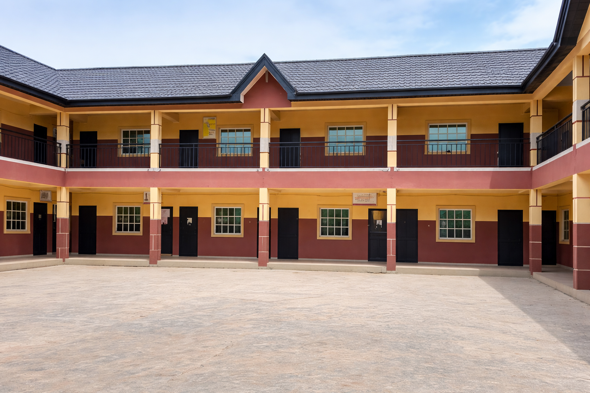

Nursery & Primary School

jolad Nursery & Primary School
Our Nursery and Primary School provides a nurturing environment where young minds blossom. With over 29 years of experience, we have perfected the art of early childhood education, combining play-based learning with structured academic programs.
We believe that the early years are crucial for a child's development. Our curriculum is designed to build strong foundations in literacy, numeracy, and critical thinking while nurturing creativity, social skills, and moral values.
School Address
2/4, Kelani avenue, Irebami Estate, Aparadija, Lafenwa, Itele. Ota, Ogun state.
+234 813 738 4501, +234 815 074 3939
joladschools@yahoo.com
Our Classes
Age-appropriate classes designed to meet the developmental needs of every child.
Creche
Ages: 3 months - 2 years
Safe and loving environment for infants and toddlers with experienced caregivers and age-appropriate stimulation activities.
- Qualified caregivers
- Safe sleeping area
- Age-appropriate toys
- Daily progress reports
Playgroup
Ages: 2 - 3 years
Introduction to structured learning through play, songs, and interactive activities that develop social and motor skills.
- Play-based learning
- Language development
- Social interaction
- Creative activities
Nursery
Ages: 3 - 5 years
Foundation in pre-reading, pre-writing, and numeracy skills with emphasis on creativity and character development.
- Phonics instruction
- Primary mathematics
- Creative arts
- Moral education
Primary 1-3
Ages: 5 - 8 years
Lower Primary education focusing on building strong literacy, numeracy, and Primary science foundations.
- English Language
- Mathematics
- Primary Science
- Social Studies
Primary 4-6
Ages: 8 - 11 years
Upper Primary preparing students for college education with comprehensive curriculum and examination preparation.
- Common Entrance Prep
- National Curriculum
- Computer Studies
- French Language
Extra-Curricular
All Ages
Wide range of activities to develop talents, build confidence, and promote physical fitness.
- Sports & Games
- Music & Dance
- Arts & Crafts
- Clubs & Societies
Primary School Gallery
A glimpse into the vibrant learning environment at jolad Nursery & Primary.
Enroll Your Child Today
Give your child the best start in life with quality early education at jolad Nursery & Primary School.